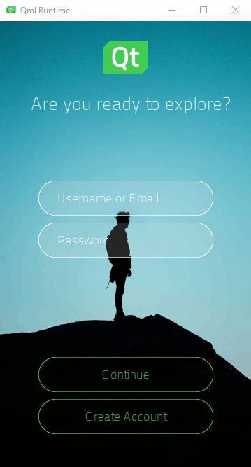
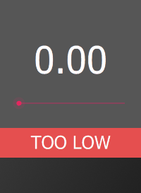

Creating UI Logic
Turn your wireframe into an interactive prototype by adding UI logic that enables your components to apply actions or react to mock data from backend systems to simulate complex experiences.
Create connections between the UI components to enable them to communicate with each other. For example, how should the appearance of a button change on a mouse click and which action should the UI perform in response to the signal that is emitted upon the mouse click.
You can create connections between UI components by binding their properties together. This way, when the value of a property changes in a parent component, it can be automatically changed in all the child components by emitting a signal that indicates a change in the value.
To reference a property of a component from another component, you can create property aliases that hold a reference to another property. Unlike an ordinary property definition, which allocates a new, unique storage space for the property, a property alias connects the newly declared property (called the aliasing property) as a direct reference to an existing property (the aliased property). Any content that is data-driven should be exported as a public property of the relevant component. For example, a speedometer should have a property for speed to which the UI is bound.
You can declare various UI states that describe how property values change from a base state. States can be a useful way of organizing your UI logic. You can associate transitions with components to define how their properties will animate when they change due to a state change.
The Log In UI - States example illustrates using states to create two UI screens and signals emitted by buttons to apply the states. The button components also switch states when they are pressed down.

Using property aliases and states to create the differences in your component instances enables you to reuse components instead of duplicating them. Thus, the components do not need to be processed as completely new component types. This reduces the loading and compilation time as well as the package size of the final application.
The preset UI controls have default properties and states that you can modify. If you need additional properties, you can turn instances of the controls into custom components and specify new properties for them.
To have your UI perform certain operations, you might need to write JavaScript expressions for conditions or convert numbers to strings. To make this easier, Qt Design Studio provides preset components called logic helpers. They are invisible components that you can use in connection with controls, such as a Slider or Check Box.
Logic helpers are available for binding property values using the boolean AND, NOT, and OR operators, as well as for mapping numbers and numerical ranges. In addition, you can synchronize the property values of two components bi-directionally.
The logic helper example uses property binding, states, and logic helpers to implement the UI logic.

The following table summarizes some typical use cases with links to more information.
| To Learn About | Go To |
|---|---|
| Responding to application events | Connecting Components to Signals |
| Formatting connections | Adding Actions and Assignments |
| Dynamically changing the behavior of a component | Adding Bindings Between Properties |
| Formatting property bindings | Setting Bindings |
| Referencing a property of a component from another component | Adding Property Aliases |
| Referencing a state from within a specific component | Working with States |
| Switching to a state when a particular property changes | Applying States |
| Using preset UI controls that have default properties and states | UI Controls |
| Creating conditional conditions | Logic Helpers |
| Adding custom properties for a particular component type | Specifying Custom Properties |